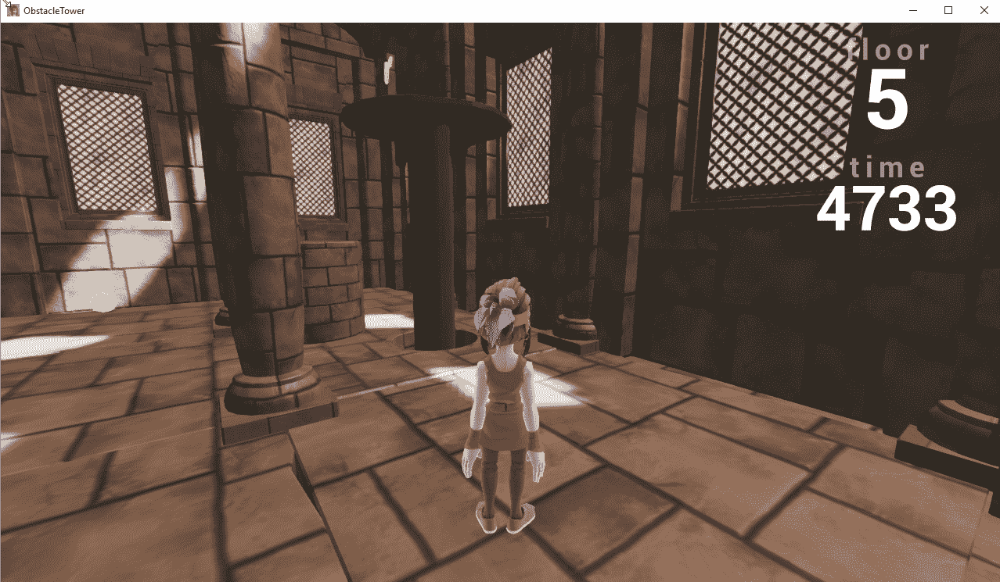

在这一章，我们的最后一章，我们将看看游戏用的深度学习 ( DL )和深度强化学习 ( DRL )的现状和未来状态。我们以诚实坦率的态度来看看这些技术是已经为黄金时段的商业游戏做好了准备，还是仅仅是新奇的东西。几年后，我们会看到DRL特工在任何可以想象的游戏中击败人类玩家吗？虽然这仍有待观察，事情正在迅速变化，但问题是:DL准备好你的游戏了吗？这可能是你此刻正在问自己的一个问题，也是我们希望在本章中回答的一个问题。
本章将包括动手练习和一般性讨论，遗憾的是没有练习。有一个很大的练习，但是我们很快就会讲到。以下是我们将在本章中介绍的内容:
为了理解上下文，本章假设你已经完成了本书中的大量练习。为了提醒读者，我们将参考那些章节，但请不要先跳到这一章。
Unity障碍塔挑战赛于2019年2月作为离散视觉学习问题推出。正如我们之前看到的，这是游戏、机器人和其他模拟学习的圣杯。更有趣的是，这个挑战是在ML-Agents之外引入的，要求挑战者从头开始编写自己的Python代码来控制游戏——这是我们在本书中已经接近学会如何做的事情，但我们省略了技术细节。相反，我们把重点放在调整超参数、理解奖励和代理状态的基础上。如果你决定应对高塔挑战，所有这些基础知识都会派上用场。
在写这本书的时候，用于开发的ML-Agents版本是0.6。如果你已经完成了所有的练习，你会注意到，所有使用离散动作空间的视觉学习环境都存在渐变消失或爆炸的问题。你将看到的是代理基本上什么也没学到，只是执行随机的动作；这通常需要几十万次迭代才能看到。但是在使用向量观测的较小状态空间的环境中，我们看不到这个问题。然而，在具有大量输入状态的视觉环境中，这个问题经常出现。这意味着，本质上，无论如何在写作的时候，你都不会想要使用Unity代码；它目前对离散动作的视觉学习能力很差。
在撰写本文时，Unity障碍塔挑战赛刚刚开始，早期指标已经在报告中。谷歌目前领先的算法DeepMind，毫不奇怪，是一种叫做彩虹的算法。简而言之，彩虹是许多不同的DRL算法和技术的顶点，所有这些算法和技术结合起来，以更好地学习离散动作视觉学习空间，这是塔很好地定义的。
现在我们已经确定您可能想要编写自己的代码，我们将了解您的代理需要解决的高级关键部分。可能需要另一本书来解释如何进行编码和其他技术方面的工作，所以我们将讨论总体挑战和您需要解决的关键要素。此外，获胜者很可能需要使用更多的概率方法来解决问题，而这目前在任何地方都没有得到很好的解决。
让我们设置挑战，并在下一个练习中运行它:

玩家模式下的障碍塔挑战
随着游戏的进展，你首先会学到的一件事是，游戏开始时非常简单，但在后面的几层，它变得非常困难，即使对一个人来说也是如此。
现在，正如我们提到的，解决这个挑战远远超出了本书的范围，但希望你现在可以理解目前扼杀深度强化学习领域的一些复杂性。我们在下表中回顾了您在采用此方法时将面临的主要挑战:
| 问题 | 第章 | 当前 状态 | 未来 |
| 视觉观察状态——您将需要构建一个足够复杂的CNN和可能的递归网络，以便在视觉状态中编码足够多的细节。 | 第七章、智能体与环境 | 目前的Unity视觉编码器是远远不能接受的。 | 幸运的是，CNN和循环网络一直在做大量的视频分析工作。记住，你不只是想捕捉静态图像；您还需要对图像序列进行编码。 |
| DQN、DDQN或彩虹 | 第五章、介绍DRL | 彩虹是目前最好的，它可以在GCP买到。 | 正如我们在本书中看到的，PPO只在连续动作空间上表现良好。为了解决离散的行动空间，我们回头看更基本的方法，如DQN或新人彩虹，这是所有基本方法的总和。我们还将讨论进一步使用深度概率方法的未来方式。 |
| 内在报酬 | 第九章，奖励和强化学习 | 内在奖励系统的使用显示了探索的前景。 | 能够引入内在奖励系统，如好奇心学习允许代理基于某种状态期望探索新环境。这种方法对于任何计划到达塔的更高层的算法都是必不可少的。 |
| 谅解 | 第六章， Unity ML-Agents | Unity提供了一个优秀的样本环境来构建和测试模型。 | 你可以很容易地在Unity中建立并测试一个相似的环境，而且速度很快，而且是你自己的。难怪Unity从未将原始的Unity环境作为项目发布。这很有可能是因为这将吸引许多新手，认为他们只需训练就能克服这个问题。有时候，训练并不能解决问题。 |
| 稀疏的奖励 |
第九章、奖励和强化学习 第十章、模仿和迁移学习 |
可以实施课程或模仿学习。 | 我们已经讨论了许多管理稀疏回报问题的方法。看看赢家在多大程度上依赖这些方法中的一种(如IL)来获胜，将是一件有趣的事情。 |
| 离散动作 | 第八章、了解PPO | 我们学习了PPO如何允许连续动作问题学习，使用随机方法。 | 正如我们之前提到的，很可能需要新的更深入的概率方法和技术来解决当前的一些问题。这可能需要开发使用新算法的新技术，这需要多长时间还有待观察。 |
为了让1楼到100楼的代理完成整个挑战，上表中突出显示的每个问题都可能需要部分或全部解决。这将如何影响团结工会，胜利者，以及整个DRL，还有待观察。在下一节中，我们将讨论DL和DRL的实际应用，以及如何在你的游戏中使用它们。
你拿起这本书的原因很可能是为了了解游戏的DL和DLR，希望得到你梦想中的工作或完成你梦想中的游戏。无论是哪种情况，我们都需要你来决定这项技术是否值得包含在你自己的游戏中，以及包含到什么程度。以下是十个问题，你可以用它们来判断DL是否适合你的游戏:
回答所有问题并记录您的分数，以确定您的完整准备度分数。请参考以下内容，以确定您和/或您的团队准备就绪的程度:
当然，前面测试的结果没有绝对的规则，你可能会发现你的分数很低，但随后会继续开发下一个伟大的AI游戏。如何实现结果取决于你，如何采取下一步行动也完全取决于你。
在下一节中，我们将看看你可以采取的下一步措施，以了解更多关于DRL以及如何在游戏中构建更好的自动化和人工智能。
既然你已经决定在你的游戏中使用深度学习和/或深度强化学习，那么是时候决定你计划如何在你的游戏中实现各种功能了。为了做到这一点，我们将通过一个表格来概述您需要通过的步骤，以建立您的游戏的人工智能代理:
|
步骤 |
动作 |
总结 |
| 开始 | 确定你希望游戏中的人工智能在什么水平上运行，从基本的，也许只是测试和简单的自动化，到高级的，人工智能将完成与玩家的对抗。 | 决定AI的水平。 |
| 资源配置 | 确定资源的数量。基本的人工智能或自动化可以在团队内部处理，而更复杂的人工智能可能需要一个或多个有经验的成员。 | 团队要求。 |
| 知识 | 确定团队拥有的知识水平以及需要什么。众所周知，任何实施新人工智能的团队都需要学习新的技能。 | 知识差距分析。 |
| 示范 | 总是从构建一个简单但可行的概念证明开始，展示系统的所有关键方面。 | 展示团队可以完成的基本前提。 |
| 履行 | 以简单和可维护的方式构建实际的系统。保持所有你知道的东西简单干净。 | 构建系统。 |
| 测试 | 反复测试系统。对系统进行彻底的测试是至关重要的，当然还有比DRL自动化测试系统更好的方法。 | 测试系统。 |
| 固定 | 任何开发软件超过几周的人都会告诉你，这个过程就是构建、测试、修复和重复。这本质上是软件开发过程，所以尽量不要添加太多其他的花里胡哨的东西来分散注意力。 | 修复系统。 |
| 释放；排放；发布 | 向用户/玩家发布软件对于任何类型的成功游戏或软件产品来说都是至关重要的。你总是希望尽早发布，这意味着你的玩家必须被鼓励去测试，并提供反馈。 | 把虫子放出来。 |
| 重复 | 这个循环是无止境的，只要你的产品/游戏赚钱，这个循环就会持续下去。 | 支持系统。 |
前面的过程是基本前提，可以满足您的大部分开发需求。在大多数情况下，您可能希望跟踪单个工作项，例如工作或任务板上的功能或错误。你可能想使用更明确的过程，比如Scrum，但是通常保持事情简单是你最好的行动方针。
Scrum和其他软件开发过程是很好的学习范例，但是除非你有经过正式培训的员工，否则最好避免自己去实现它们。在这些过程中，通常有一些微妙的规则需要强制执行，以使它们像它们所声称的那样工作。即使是训练有素的Scrum大师也可能需要每天为在许多组织中执行这些规则而战斗，最终他们的价值变得更受管理驱动，而不是以开发人员为中心。使用前面的表格作为构建下一个游戏的步骤指南，永远记住构建、发布、修复和重复是好软件的关键。
在下一部分，我们将看看你可以用来扩展你的学习的其他东西。
有越来越多的资源可以用来学习机器学习，DL，当然还有DLR。清单变得非常大，有许多材料可供选择。出于这个原因，我们现在将总结我们认为最有希望为游戏开发AI和DL的领域:
一本硬编码的学习资源清单很可能在这本书印刷或发行之前就过时了。使用前面的列表来概括您的学习，并拓宽您的基本机器学习和数据科学知识。首先，DL是一种服务于数据的数据科学追求；永远不要忘记这一点。
在我们最后一章的下一节，我们将总结这一章和这本书。
在这一章中，我们简短地浏览了许多基本概念，包括你在DL和DRL的下一步；也许你会决定追求团结障碍塔的挑战，并完成它，或者只是在你自己的项目中使用DRL。我们看了一些简单的测验，以评估你在游戏中投入和使用DRL的潜力。在此基础上，我们研究了发展的下一步，最后我们研究了可能需要关注的其他学习领域。
这本书是一个练习，让你了解DL在未来应用于你的游戏项目时有多有效。我们在早期探索了基本DL原则的许多方面，并研究了更具体的网络类型，如CNN和LSTM。然后，我们研究了如何将这些基本的网络形式应用到驱动和构建聊天机器人的应用程序中。从那里，我们看了当前机器学习算法之王，强化和深度强化学习。然后，我们在几个章节中研究了当前的领导者之一Unity ML-Agents，以及如何实现这项技术，研究了如何将简单的环境构建成更复杂的多代理环境。这也让我们能够探索不同形式的内在/外在奖励和学习系统，包括课程、好奇心、模仿和迁移学习。
最后，在结束本章之前，我们完成了一个关于使用DRL进行自动测试和调试的长时间练习，增加了使用IL作为增强测试方法的选项。